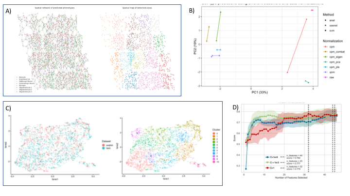
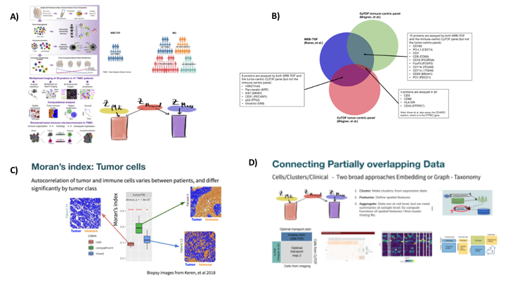

Kim-Anh Lê Cao 0000-0003-3923-1116
· mixOmicsTeam
· mixOmicsTeam
Melbourne Integrative Genomics, School of Mathematics and Statistics, University of Melbourne, Australia
· Funded by Grant National Health and Medical Research Council Career Development fellowship (GNT1159458)
Aedin C Culhane 0000-0002-1395-9734
· aedin
· AedinCulhane
Data Sciences, Dana-Farber Cancer Institute, Boston, MA, USA; Biostatsitics, Harvard TH Chan School of Public Health, Boston, MA, USA
· Funded by Chan Zuckerberg Initative, NIH, DoD (need to get grant IDs)
Elana Fertig 0000-0003-3204-342X
· ejfertig
· FertigLab
Department of Oncology, Sidney Kimmel Comprehensive Cancer Center, Johns Hopkins University School of Medicine, Baltimore, MD, USA; Department of Biomedical Engineering, Johns Hopkins University School of Medicine, Baltimore, MD, USA; Department of Applied Mathematics and Statistics, Johns Hopkins University Whiting School of Engineering, Baltimore, MD, USA
· Funded by National Institute of Health, National Cancer Institute; National Institute of Health, National Institute of Dental and Craniofacial Research; Lustgarten Foundation; Emerson Foundation; Allegheny Health Network
Vincent J. Carey 0000-0003-4046-0063
· vjcitn
Channing Division of Network Medicine, Brigham and Women’s Hospital, Harvard Medical School
· Funded by National Institutes of Health, National Human Genome Research Institute; National Institutes of Health, National Cancer Institute; Chan-Zuckerberg Initiative
Full outline described in 01.outline.md as comment if you need to go back to the big picture.
Figures, Tables and online resources
Figures
Figure 1: Outline of manuscript (Provided below)
Figure 2: scRNA-seq + seqFISH main results
Figure 3: scTargeted proteomics main results
Figure 4: scNMT-seq main results
Figure 5: Illustration of partial overlap between studies (at the cells and / or features level)
Figure 6: Within study cross-validation
Figure 7: Infrastructure of Giotto package as illustration
Tables
Table 1: Summary of tasks and methods across all hackathons highlighting methods and common challenges (Provided below)
Table 2: Glossary of terms, consensus terms will be used throughout the manuscript
Table 3: Benchmarking single cell data sets
Table 4: List of single cell analysis software
Online resources
Online resource 1: Three hackathon datasets (github)
Online resource 2: R packages with open source reproducible vignettes (12 vignettes)
Abstract
Introduction
Comprehensive characterization of biological systems with multi-omics
Single cell community has advanced technologies to enable concurrent processing of biological systems at multiple molecular resolutions
The lack of prior knowledge and gold standard benchmark naturally leads to a data-driven approach
New single cell multi omics initiatives:
Human Cell Atlas (HCA): assess variation in normal tissues
Brain initiative and Allen Brain
Human Tumor Atlas Network (HTAN): Single-cell, longitudinal, and clinical outcomes atlases of cancer transitions for diverse tumor types.
What bulk multi-omics (e.g. TCGA, ENCODE) have taught us:
Type of omics that can answer a specific biological question
The value of open resources for methodological developments
New hypotheses
Using hackathons to illustrate analysis standards and challenges for capturing biological information from multi-omics technologies
Brief overview of our three hackathon studies highlighting state of the art challenges (e.g., spatial transcriptomics, cross-study analysis, epigenetic regulation)
Challenges include issues with noise and experimental design, Time lag between regulatory levels not addressed and many open questions
remain (e.g methylation / gene expression), Direction of regulation not captured
We present our findings from hackathon case studies that helped us obtain benchmarks and define a common language for multi-omics
Objectives of this paper
Provide guidelines on tools / data / technologies / methods and needs to model the multi-scale regulatory processes in biological systems for a computational biologist audience
Outline and messages
Cellular and molecular regulation is fundamentally multi-scale and captured by distinct data modalities
Traditional hypothesis-driven multi-omics/view studies only consider one facet of these technologies, but more can be learned through a holistic approach extending into atlases
We present our findings from hackathon case studies that helped us obtain a broader picture and language
Outline of the paper:
Figure 1: Main challenges discussed during our brainstorming sessions from the hackathons.
Overview of hackathon studies to illustrate multi-omics standards and challenges
Multi-omics technologies provide the unique capacity for full spatial and molecular characterization biological systems. In these analyses, each data modality can uniquely resolve specific biological scales from which complementary data integration techniques can resolve multi-scale interactions. In spite of this potential, computational techniques and benchmark strategies for even pairs of datasets across high-throughput measurement technologies remain an active area of research. The hackathon studies at the Mathematical Frameworks for Integrative Analysis of Emerging Biological Data Workshop and described here were tailored to highlight independent challenges of data integration. First, while spatial molecular profiling is rapidly emerging, these technologies often provide lower molecular resolution than non-spatial counterparts. In these cases, integration strategies that merge these datasets have the promise to enhance the molecular resolution of spatially resolved profiling. To address this challenge, We designed a hackathon using spatially resolved transcriptional data from seqFISH with corresponding non-spatial single cell profiling data for the mouse visual cortex from [1]. A second challenge for multi-omics technologies in cases for which tissue availability limits the ability to obtain multiple measurements in samples from identical conditions. This limitation raises the question as to whether information can be transferred from datasets between disparate sample cohorts. Therefore, we designed the second hackathon to contain two triple negative breast cancer cohorts profiled with single cell proteomics profiling from mass cytometry (CyTOF) [3] and spatial in-situ proteomics from Multiplexed Ion Beam Imaging (MIBI) [4]. While each of these hackathons use data at the same molecular scale, genetic and epigenetic alterations to DNA further drive the transcriptional regulation that mediates intra- and inter-cellular signaling processes underlying cellular fate transitions and states. Our third hackathon uses scNMT-seq data to obtain concurrent DNA methylation, chromatin accessibility, and RNA expression from the same cells to delineate the regulatory networks that underlie mouse gastrulation [5]. Altogether, exploration of the analysis approaches employed to address these disparate hackathons across biological contexts provides an unique opportunity to identify technology-specific challenges and unifying themes that are essential to effectively employ multi-omics datasets into new biological knowledge.
scRNA-seq + FISH as a case study for spatial transcriptomics
Overview and biological question
Single cells are considered the smallest units and building blocks of each tissue, but they still require proper spatial and structural three-dimensional organization in order to assemble into a functional tissue that can exert its physiological function.
In addition, most tissues are composed of multiple cell types whose identity and function can be inferred through their unique transcriptomic profile.
In the last decade single-cell RNA-seq (scRNA-seq) played a key role to capture single cell gene expression profiles, which allowed us to map virtually all the different cell types and states in whole organisms.
Despite this remarkable achievement this technology is based on cellular dissociation and hence does not maintain spatial relationships between single cells.
More recently technologies have begun to emerge that can profile the transcriptome of single cells within their original environment.
These technological advancements offer the possibility to examine how gene expression is influenced by cell-to-cell interactions or organized in a spatially coherent manner.
One such approach is sequential single-molecule fluorescence in situ hybridization (seqFISH), which can identify single molecules at (sub)cellular resolution with high sensitivity.
Nevertheless, and in contrast with scRNAseq, seqFISH and many other spatial transcriptomic technologies often pose significant technological challenges and hence the number of profiled genes per cell is usually restricted to a smaller number (10-100s).
To overcome the lack of spatial information with scRNAseq and the common limited coverage in spatial datasets, we sought to combine and integrate a matching scRNAseq and seqFISH dataset, since both were generated from the mouse visual cortex region.
More specifically, in this hackathon we explored a number of strategies to identify the most likely cell types in the seqfish dataset based on information obtained from the scRNAseq dataset.
And in the opposite direction, we sought out how to transfer spatial information obtained from the seqfish dataset to that of the scRNAseq dataset.
Figure 2: Overview of analysis. note: letters order can be changedA A spatial network was built from cells’ positions using Voronoi tessellation, whilst cell types were inferred from an SVM trained on scRNAseq data. Left: The neighbors aggregation method described in [challenge 2] computes aggregation statistics such as mean or standard deviation on the seqFISH gene expression data for each node and its first order neighbors. Right: This approach identified spatially coherent areas that can contain one or several cell types, and can be used to detect genes whose expression is modulated by spatial factors rather than cell type.B** Assessment of cell type prediction using different normalization techniques and classifiers. Results performance (based on what?)are projected on a PCA plot, showing that methods that integration information from both seqFish and scRNAseq are distinct from methods that do not (along the x-axis). (Amrit, figure still in discussion)
CCaption missing, JoshD Challenge 2: what is the minimal number of genes required for data integration? SVM classification models (C=1e-6, C=1e-3, C=1) were trained and evaluated with different number of genes in scRNAseq data using Recursive Feature Elimination (RFE). The results show that a small (do you mean smaller that the original study?) gene list to identify cell types in both data types, but the lack of goad standard hinders our ability to evaluate the relevance of such genes. Hang
.
Computational challenges
Challenge 1: overlay of scRNA-seq onto seqFISH for resolution enhancement
[suggestion 1]
Sequencing and imaging based single-cell transcriptomic profiling have complementary strengths.
Whereas single-cell RNAseq generates transcriptome-wide information, it does not have spatial information.
On the other hand, seqFISH (Lubeck 2014; Shah 2016) provides single-cell resolution spatial information, but typically profiles the expression level of only 100-300 genes.
Although the newer generation of seqFISH technology (called seqFISH+) has greatly enhanced its capacity which can now be used to profile 10,000 genes (Eng 2019), the technology is significantly more complex and costly.
As such, it is desirable to develop computational approaches to effectively integrate scRNAseq and seqFISH data analyses.
In this hackathon, the participants were provided with seqFISH (Zhu 2018) and scRNAseq (Tasic 2016) data corresponding to the mouse visual cortex and challenged to accurately identify cell-types by integrating both datasets.
Cell type labels, derived from scRNAseq analysis (Tasic 2016) and previous seqFISH/scRNAseq integration (Zhu 2018) were also provided as reference.
A variety of computational approaches were applied to achieve this goal, including: supervised classification with support vector machines (Coullomb, Xu), semi-supervised self-training (Singh), and unsupervised matrix factorization methods (Sodicoff) (Figure 2).
While the methodologies are different, a number of themes recur, such as the importance of gene selection and batch effect correction.
As expected, the ability to identify refined cell-type structure relies on the selection of cell-type specific marker genes in seqFISH data, suggesting a potential benefit of using single-cell RNAseq data to guide seqFISH experimental design.
Batch effect is another important factor affecting the accuracy of data integration.
While a number of batch effect correction methods have been developed (COMBAT, Seurat, Scanorama, etc), it remains challenging to distinguish technical from biological variations if the biological samples do not match exactly.
[suggestion 2]
The mouse visual cortex consists of multiple complex cell types, however the number of profiled genes in the seqFISH dataset is limited to 125 genes.
Moreover, these genes were not prioritized based on their ability to discriminate between cell types and thus assigning the correct cell identity is challenging.
In contrast the scRNAseq dataset is transcriptome wide, thus including the 125 aforementioned genes.
As such we first used all genes to identify the cell type labels for each cell in the scRNAseq data with high certainty.
Next, we leveraged that information to build a classifier based on (a subset of) the 125 common genes only.
This classifier could subsequently be applied to the seqFISH dataset in order to assign cell types to each cell with high probability.
During the hackathon we tested various machine learning or data integration models, but also noted that initial dataset normalization strategies might have a significant impact on the final results (see common challenges [???]).
Although unique molecular identifier (UMI) based scRNAseq and seqFISH can both be considered as count data, we observed dataset specific biases that could be attributed to either platform (imaging vs sequencing) or sample specific sources of variation.
Here we opted to apply a quantile normalization approach which forces a similar expression distribution for each shared gene.
The hackathon participants selected two machine learning classifiers, a supervised support vector machine (SVM) and a semi-supervised lasso and elastic-net regularized generalized linear model (glmnet).
To further improve the SVM model the participants tried multiple kernels and searched for optimal hyperparameters using a combined randomized and zoomed search.
In addition, different flavors of recursive feature elimination was used to find the optimal or minimum number of genes needed to correctly classify the majority of the cells.
Importantly, participants tested different classification accuracy metrics to alleviate the major class imbalance in the dataset, since more than 90% of cells were excitatory or inhibitory neurons.
The glmnet approach used a iterative model building approach, which combines both datasets and initially only retains the highest confidence labels and then gradually adds more cell type labels until all cells have been classified.
This type of self training approach might in fact be more generalizable to other datasets.
Finally, a data integration approach based on integrative non-negative matrix factorization (NMF) was used by applying the previously published LIGER approach.
By integrating both datasets in a similar subspace based on shared factors, cell type labels can be transferred using a nearest neighbor approach.
Challenge 2: determine signatures of cellular co-localization or spatial coordinates in non-spatial scRNA-seq
[suggestion 1]
How could one identify spatial patterns in the seqFISH data? This broad question can be divided into a number of specific tasks, such as detecting genes whose expression is spatially coherent, cell types whose spatial distribution is confined to distinct regions, recurrent multi-cell-type interaction clusters, etc, and the spatial scale may vary from subcellular all the way to tissue-wide organizations.
While there have been abundant studies in the geo-spatial analysis domain, computational tools targeting specific spatial transcriptomic questions are still lacking.
In this hackathon, one group tackled this challenge by aggregating gene expression data from neighboring cells followed by spatial clustering (Coullomb).
Much more work in the future is need to further explore such information.
[suggestion 2]
Most analyses that were originally developed for scRNAseq data can be immediately applied to spatial transcriptomic datasets, however methods to extract sources of variation that originate from spatial factors are still sparse.
To incorporate spatial information the cells from the seqFISH dataset were first connected through a spatial network based on Voronoi tessellation and then the expression of each individual cell was spatially smoothed by calculating the average gene expression levels over all the neighboring cells.
This smoothened and aggregated data matrix was subsequently used to create a 2 dimensional UMAP from which clusters were identified through a density based clustering approach.
The obtained cluster labels can then be mapped back to the original spatial locations for further visual inspection and analysis.
[suggestion 2 detailed]
Most analyses that were originally developed for scRNAseq data can be immediately applied to spatial transcriptomic datasets, however methods to extract sources of variation that originate from spatial factors are still sparse.
In order to take into account both gene expression data and spatial information, the cells from the seqFISH dataset were first connected through a spatial network based on Voronoi tessellation.
Then, for each node, its RNA count data was aggregated with its first order neighbors’ count data.
The mean and standard deviation were computed for each gene in the gathered data in order to capture the global tendency as well as the variability in the area arround each node.
Thus, each node has nb_genes x nb_statistics (here 2) variables.
These “aggregation statistics” can be visualized on a 2D UMAP projection.
These data were clustered in UMAP reduced spaces of dimensionality between 2 and 9, higher dimensions allowing to define more fine-grained clusters.
The clustering was performed with HDBSCAN, a noise-aware density-based algorithm that can define arbitrary-shaped clusters.
These clusters can then be visualized on the 2D UMAP projection and on the 2D spatial map of seqFISH data.
The clusters are spatially coherent, some of them contain several cell types, and a given cell type is not necessarily limited to one specific cluster.
During the exploratory phase consisting in varying the number of dimensions and the minium cluster size, a specific spot area was found clustered for several parameters combinations, suggesting it wasn’t an artifact of the choice of parameters.
“Differential expression” analysis was performed between this spot and the other areas, although we don’t look at differences in gene data but in aggregation metrics.
This area seems to correspond to a “regeneration hub”, but this analysis has to be considered carefully and further analyzes is required to confirm this hypothesis.
This “neighbors aggregation” method has been extended to aggregate RNA counts (or other node attributes) to higher orders of neighbors in order to define aggregation metrics on wider areas, which could be useful for analyzes of bigger tissues.
One interesting extension would be to substract phenotypes contributions to RNA counts for each cell before performing the neighbors aggregation analysis in order to highlight genes that are modulated by spatial factors.
But if we want to retrieve the mean expression of a cluster for cells belonging to it, we should first check cluster’s convexity and be sure that no other cluster lies within it.
Spatial proteomics and cross-study analysis
Overview and biological question
The single-cell targeted proteomics hackathon investigated the tumor-immune microenvironment of primary breast cancer tissue.
The challenge was the joint cross-study, cross-platform integrative analysis of single cell proteomics data that had low feature overlap, were generated on different antibody-based targeted proteomics technological platforms and in different laboratories [1, 2].
Mass cytometry (CyTOF) from Wagner et al. [3] measured 73 proteins in two panels (immune, tumor) in 194 tissue samples from 143 subjects, of which 6 patients had triple-negative negative breast cancer.
The second dataset applied Multiplexed Ion Beam Imaging (MIBI) to quantify spatial in-situ expression of 36 proteins in 41 triple-negative breast cancer patients [4]. 3
Whilst this is a formidable data integration challenge, it reflects the bioinformatics analysis of clinical teams who wish to compare and investigate data collected on different cohorts of cancer patients.
The first questions simply asked if partially-overlapping proteomic data collected on different patients with similar phenotypes could be integrated, and asked participants to test if measurements in one technology could be transferred and used to predict information in the second.
The MIBI data provided spatial location and expression of proteins, therefore the challenge asked if the spatial expression patterns of proteins measured on mass-tag could be predicted.
Secondly it raised questions unique to spatial ’omics technologies.
Does spatial capture unique information, beyond cell compositions.
Could information about the spatial location of immune cell populations in breast cancer be discovered in integrated analyses of these datasets.
Finally the datasets had no overlap in patients, so how could heterogeneous phenotype information be used to integrate patient ‘omics data with low feature and no tumor biological sample overlap.
Figure 3:A sc_targeted proteins hackathon challenge (Kris to simplify or merge with B).
B Challenge 1: Lack of overlap between protein features across studies (update with color friendly color).
C Challenge 2: Spatial analysis with Moran’s index: Moran’s index is a computed on Gabriel graph (using both dummy variables and protein expression measurements) and differs significantly between groups.
Figure shows boxplot of Moran’s index values on tumor/immune dummy variable with examples from Keren et al. [4] corresponding to each tumor category.
Red asterisks indicate significance of an ANOVA of each group with all others, and the p-value from an overall ANOVA across the three groups is reported above.
D Challenge 3: Partial overlap of data (Kris to avoid overlap with common challenge Fig 5 or remove).
Computational challenges
Challenge 1: Lack of overlap between protein features across studies
The low number of features precluded integration of features at the level of gene set or pathways.
There were only 20 proteins that were assayed in both studies (Figure 3A-B).
The majority of features were cell-type markers or biomarkers targets of breast cancer therapeutic intervention.
The limited overlap in these studies necessitated the use of surrogate measures of cross- study association.
Although the overlap in proteins was low, many proteins were cell-type markers, providing the opportunity to perform cross-study integration of cell type proportions in tumor tissue samples.
Hackathon participants applied several semi-supervised and supervised algorithms to transfer cell labels and cell compositions from one dataset to the second.
To capture the hierarchical structure of cell lineage, Lauren Hsu (Harvard) applied a simple random forest (RF) approach to perform feature transfer learning of cell type labels.
An adaptation of the prediction strength approach described in Tibshirani [6] demonstrated model robustness: first, a model was trained on the labeled dataset and used to predict labels in the unlabeled dataset; next, a second model was trained based on the second dataset with the newly predicted labels; finally, she assessed the ability of the second model to recover the correct original labels when making predictions on the labeled dataset.
Yingxin Lin (Univ of Sydney) mapped the cells from CyTOF to imaging with spatial information by solving an entropic regularization optimal transport problem [4, 11], utilising the cosine distance of the common proteins between the two datasets as transport cost.
The constructed optimal transport plan can be considered as likelihood of cells from one modality mapped to cells from the other modality, which allows the prediction of protein expression measured only in CyTOF on imaging data.
By clustering on the imputed expression matrix, she was able to identify a sub tumour cell type that is not revealed in the original matrix.
However the scales of protein expression was a possible limiting factors When integrating cell compositions using the correlation expression of protein markers, some cell markers were expected on a range of cell types (e.g., CD45), whereas others are more specialized and represent a subset of those cells (e.g., CD4).
Others challenges associated with cell compositions analysis of proteomics analysis included uncertainty over antibody specificity and consistency between studies, the sensitivity and specificity of protein markers for cell types, tissue and disease heterogeneity
The assignment of cell type relied on manually curated protein annotation, and was dependent on domain-specific knowledge; for example that CD4 is expressed by T-cells.
To date, methods for cell type assignment, classification or extraction of differentially expressed proteins cannot easily be applied to targeted proteomics.
Participants expressed a need for a unifying map between cells present in different datasets, and for annotation resources to provide quality metric or priors of protein cell type markers.
There is a need for protein expression atlases to support cell type classification and potentially if this could be developed from large scale consortiums IHC of proteins (Human Protein Atlas [5, 6]), although the antibodies used and their performances might vary between labs.
Standards/QC/Normalization
Challenge 2: spatial protein expression analysis
Whereas the CyToF mass spectrometry provided protein expression and counts/composition of cells in breast tumor-immune environment, the MIBI-TOF data provided spatial information that quantified cell attributes (shape/size/spatial coordinates) in addition to expression levels, thus providing the opportunity to examine protein expression, cell microenvironment, and predict cell-cell interactions and the cellular community ecosystem.
Spatial information can be encoded as a set of XY coordinates (cell centroid), a line (eg tumor-immune boundary) or a polygon, which is a closed plane defined by a number of lines.
A polygon can define complex shapes such as a cell or a community of cells.
Spatial protein expression can be summarized using spatial descriptive statistics, such as the autocorrelation of the expression of a protein within a neighborhood of polygons.
The neighborhood of polygons can be defined with a Euclidean distance or sphere, by a number of bounded cells or other measures, many of which were developed in geographical information science or ecology and assess if a spatially measured variable has a random, dispersed or clustered pattern [7].
Kris Sankaran examined the extent to which expression data could be used to predict spatial properties of tissue samples.
To build predictors, cells were first clustered (K = 20) on the basis of protein expression.
Sample-level expression summaries were defined as the proportions of cells belonging to each cluster.
To build the spatial response variables, a K-nearest neighbor graph was obtained from cell centroids (K = 5).
For each cell, the average distance to its 5 nearest neighbors was computed, reflecting its local density.
Further, the entropy of the cluster memberships across nearest neighbors was found, reflecting local heterogeneity.
To summarize samples’ cell ecosystems, cell-level statistics were averaged across each sample’s cells.
A random forest model trained from expression to spatial predictors achieved an average cross validation RMSEs of (tk ) for neighborhood size and entropy, respectively, relative to baselines of () obtainable by predicting the mean.
Dr. Pratheepa Jeganathan applied topic modelling and defined five topic trained on protein expression and cell compositions in the CyToF data were sufficient to predict cell co-locations, in 10% MIBI-ToF Test data.
Pratheepa Jeganathan (Stanford) applied a Bayesian modelling approach based on latent Dirichlet allocation (Blei, Latent dirichlet allocation Journal of machine Learning research 3.Jan (2003): 993-1022).
Topic modeling was used to identify the dominated topics and assign
spatial location of MIBI-TOF cells to the CyTOF data or vice-versa, based on the topic distribution in each cell (Ref topic modelling?).
Among the five topics identified, the first topic was dominated in most of the immune cells from CyTOF data and the other four dominated in all other cells.
Cells from MIBI-TOF were depicted in five clusters (link to vignette) and were consistently based on the observed and predicted marker expression, but these clusters were not identified with only observed marker expressions.
[ further details from Pratheepa available in pdf file in debrief folder]
Yingxin Lin (Sydney) examined the prognostic performance of different higher level spatial metrics.
She measured protein autocorrelation using Moran’s Index (I) with a sphere distance, cell type localisation using nearest neighbour correlation, or cell type interaction composition, Ripley’s L-function.
High-dimensional Cox models with fused lasso penalty and random forest survival models were fitted utilising different features, including clinical features such as tumour stage, tumour grade, age and tumour size, as well as features like cell type composition.
Evaluating by the c-index via cross-validation, the spatial metrics are found to be predictive, especially in triple negative breast cancer where clinical features such as grade are poorly prognostic.
Lauren Hsu (Harvard) also considered Moran’s I but used a graph-based neighborhood measure (Gabriel graph, based on Delaunay triangulation) instead of a sphere euclidean distance, and found that Moran’s I differed significantly between the three prognostic tumor scores described by Keren, et al. [4](Figure 3C).
Need for development of spatial measure - different in dimensions of RNA v proteins
Challenge 3: Fourth corner Integration of data (at the level of phenotype)
Another question often faced in cross-study integration is integration of biological samples that are non-overlapping but have similar phenotypes.
The aim is to identify biomarkers from the different omics data to predict the same phenotype, and, more importantly, to explore how the markers selected from multiple datasets are in agreement with or distinct from each other.
The integration of the markers from each dataset should enable to extend biological knowledge that is not available by single omics data.
To solve the challenge, phenotypical data (such as the cell attributes) are the critical factors that should be used to link the two datasets (Figure 3D).
The participants were successful at data integration using patient phenotype measures such as grade, stage and overall survival.
Breast cancer is highly heterogeneous, and multiple breast cancer molecular subtypes have been described [8, 9].
Both MIBI and Jackson data used different approaches to cell type annotation and had 13 proteins in common.
Borrowing from ecology and french school of ordination, Chen Meng (Munich) described this problem as a case of the fourth corner problem (or RLQ).
Briefly, given two omics data where both rows (features) and columns (samples) are non overlapping, and phenotypical data available for each omics data, multiplying the two phenotypical factors will derive a bridging matrix that links the features of two omics data.
We should note that the two phenotypical matrices need to be multipliable, i.e. the phenotypical data should describe the same phenotypical factors over the samples in the corresponding dataset.
The Chessel fourth corner RLQ is a matrix decomposition method to solve the problem [7; doi:10.1111/ecog.02302].
It decomposes the bridging matrix (phenotypical matrix) into components, each of which often represents a specific phenotypical pattern in the data.
The loading matrix of each of the omics data indicate how a feature is correlated with phenotypical factors.
Summary
this could be included in other section
In contrast to traditional fine resolution of mapping individual genes or features between studies, the proteomics challenge investigated hierarchical structure among the ’omics, cell and phenotype layers and applied a number of measures of higher order concordance to integrate cross study.
Different questions asked from different angles based on the dataset:Integration, clinical, spatial
Extraction “real” and “abstract feature” space were applied in data integrations.
Abstract lower dimensional representations of spatial coordinates successfully captured higher level cellular structure and were more prognostics that individual feature information, suggesting that new measures of the tumor or cell ecosystems of interacting cells are needed because these interactions are fundamental to disease progression.
These efforts will require standardized vocabulary, benchmarked methods, and common abstracted variables that can be compared between studies.
Vital to these will be defining a new cell and cell community annotations, DUNCAN
The field will need to define vocabulary and relationships between different scales, when integrating high definition fine-resolution feature level, or subcellular molecular data with global, coarse or lower-resolution bulk data, however integrating of spatial information and of data across scale is not unique to biology.
Similar spatial and scales issues have been addressed in environmental ecology, weather science and geographical information system analysis.
Future Limitation of channels - Single cell mass spec v spatial antibody
scNMT-seq as a case-study for epigenetic regulation
Overview and biological question
The maturation of single-cell sequencing technologies has enabled the identification of transcriptional profiles associated with lineage diversification and cell fate commitment[8]. Yet, the accompanying epigenetic changes and the role of epigenetic layers in driving cell fate decisions still remains poorly understood[9].
scNMT-seq is one of the first experimental protocols that enable simultaneous quantification of RNA expression and epigenetic information from individual cells[10]. Briefly, in scNMT-seq cells are incubated with a GpC methyltransferase enzyme that labels accessible GpC sites via DNA methylation. Thus, after bisulfite sequencing, GpC methylation marks can be interpreted as direct readouts for chromatin accessibility. This stands in contrast to CpG methylation marks, which can be interpreted as endogenous DNA methylation. In addition, by physically separating the genomic DNA from the mRNA, scNMT-seq can profile RNA expression, DNA methylation and chromatin accessibility readouts from the same cell.
Data set description
Gastrulation marks a major lineage specification event in mammalian embryos, accompanied by profound transcriptional rewiring and epigenetic remodelling [5]. scRNA-seq studies have identified major transcriptional changes associated with cell fate commitment, but the accompanying epigenetic reprogramming and the coordination between different epigenetic layers remains poorly understood.
In this hackaton we used a data set where scNMT-seq was applied to mouse gastrulation [11]. A total of 749 cells across four developmental stages (E4.5 to E7.5) passed quality control for all three data modalities. For simplicity, in the workshop we focused on the integration of RNA expression and DNA methylation, quantified over the following genomic contexts: gene bodies (D=15837), promoters (D=12092), CpG islands (D=5536), p300 binding sites (D=101), CTCF binding sites (D=175) and DHS (D=66) open sites.
Applying standard dimensionality reduction algorithms confirms that all three embryonic stages can be separated on the basis of RNA expression. The task of the workshop was to evaluate whether the same stages can also be discerned on the basis of DNA methylation.
Computational integration
We considered three computational strategies:
PLS (as implemented in DIABLO[12]): projection to least squares model. A sparse generalisation of canonical correlation analysis that maximises covariation between prespecified pairs of data modalities.
LIGER[13]: unsupervised non-negative matrix factorisation model for manifold alignment. It assumes a common feature space by aggregating DNA methylation over gene-centric elements (promoters or gene bodies) but allows cells to vary between data modalities.
MOSAIC [XXX]: a multi-omics supervised clustering algorithm inspired from survClust.
Computational challenges
Challenge 1: defining genomic features
The first challenge concerns the definition of the input data. The output of single-cell bisulfite sequencing are binary DNA methylation measurements for individual CpG sites. Integrative analysis at the CpG level is extremely challenging due to (1) the sparsity levels, (2) the binary nature of the readouts, and (3) the challenging interpretability of individual dinucleotides.
To address these problems, DNA methylation measurements are typically aggregated over predefined sets of genomic elements (i.e. promoters, enhancers, etc.). This preprocessing step reduces sparsity, permits the calculation of binomial rates that are approximately continuous and can also improve interpretability of the input features.
There are two common strategies to define genomic elements. The first one is to use a running window approach across the entire genome. This strategy has been succesful to distinguish heterogeneous cell types, but it does not improve interpretabiliy and it leads to a massively large feature set. The alternative strategy is to adopt a supervised approach where ChIP-seq data or chromatin accessibility information is employed to restrict the feature space to genomic regions of regulatory potential.
[DESCRIBE RESULTS]
Our results confirm that the appropriate selection of the feature space is critical for a successful integration with RNA expression.
Challenge 2: Missing values in DNA methylation
Because of the low amounts of starting material, single-cell bisulfite sequencing protocols are limited by incomplete CpG coverage. Nonetheless, in contrast to scRNA-seq, missing data can be discriminated from dropouts.
Two strategies were put forward in the workshop to handle missing values. The first is to define an inference framework that omits missing values, as done in PLS and MOSAIC. The second approach, for methods that do not handle missing information, including LIGER, is to perform a priori imputation of DNA methylation values.
Here we compared the integration performance for PLS and MOSAIC with and without imputation. Notably we observe (…)
[DESCRIBE RESULTS]
Challenge 3: Linking epigenetic features to gene expression
One of the main advantages of single-cell multi-modal assays is the ability to unbiasedly link epigenetic variation with gene expression.
Transcriptional activation is associated with specific chromatin states near the gene of interest. This includes deposition of activatory histone marks such as H3K27ac (in promoters and enhancers), H3K4me3 (in promoters) and H3K36me3 (in gene bodies), binding of transcription factors, promoter and/or enhancer demethylation and chromatin remodelling. All these events are closely interconnected and leave a footprint across multiple molecular layers that can be (partialy) recovered by performing an association analysis between a specific chromatin readout and mRNA expression. However, given the large amount of genes and regulatory regions, this task can become prohibitively large and it is mandatory to restrict the feature space to avoid a complex multiple testing problem.
A simple and practical approach from a computational perspective involves considering only putative regulatory elements within each gene’s genomic neighbourhood. Nonetheless, this might miss important links with regulatory elements located far away from the neighbourhood.
In recent years, chromosome conformation capture experiments, have uncovered a complex network of chromatin interactions inside the nucleus connecting regions separated by multiple megabases along the genome and potentially involved in gene regulation. Early genome-wide contact maps generated by HiC uncovered domains spanning on the order of 1 Mb (in humans) within which genes would be coordinately regulated. Thus, a second strategy to associate putative regulatory elements to genes is to build on existing promoter-centered chromatin contact networks to restrict the association analysis to putative regulatory elements that are in 3D contact with genes.
Although this is a promising strategy to reduce the complexity of the association analysis, most of our 3D interaction datasets are produced in bulk samples and it is so far unclear how much of these structures are preserved across individual cells. Single-cell conformation capture experiments are still limited by data sparsity and high levels of technical noise, but we envision that technological advances in this area will deepen our understanding on the regulatory roles of chromatin states.
Commonalities between analytical multi-omics approaches for hackathons
We summarize the common main challenges faces across all hackathons, and the common approaches adopted to analyse multi-omics single cell data.
Table ?? summarizes the main methods that were applied across all hackathons. Common main challenges included the assessment of the effect of pre-processing steps (normalization, upstream feature selection), the lack of overlap between cells or features (Figure ??), managing differences in scale across data sets, the application of generic approaches developed for bulk data and adapted for single cell data, study specific approaches for spatial analysis (sc spatial and sc proteomics studies) and the inclusion of additional information. A very large number of methods that were applied derive from bulk RNA-seq literature, with the exception of projection methods such as tSNE, UMAP and LIGER (the latter two also based on the common techniques NMF and PCA that were further developed for single cell data).
The choice of methods that were study-specific relied mostly on the challenge or biological question to address. For example, data integration was moslty addressed using projection approaches across all studies, whilst single cell spatial analysis required specific approaches based on Hidden Markov random field or Moran’s Index (Figure 3B).
Dependence on pre-processing method and/or variable selection
Pre-processing steps strongly affect downstream analyses. Our participants thoroughly assessed the effect of normalisation and data transformation (e.g. sc spatial, Figure 2Letter), preliminary feature selection (mostly on based on highly variable genes) or feature summarization (scNMT-seq study). Comparisons between analyses were facilitated by providing processed input data (ref to software section), but such step was not sufficient to face reproducibility issues between the original published study and the new analyses. For example in the sc spatial study, Coullomb selected 19 genes (in scRNA-seq? or seqFISH?) whereas the original paper (incl ref) was based on 47 genes. No consensus was reached regarding what was the best way to process such emerging data, as no ground truth nor established biological results are yet available (ref: section benchmark).
Approaches for partial overlap of information (cells / features)
Degree of overlap between datasets varied dramatically within each study. Intuitively, one requires at least one type of overlap (whether on the features, or on cells, Figure ??) in order to integrate information across modalities. The field has made progress in developing methods to integrate data sets across the same (bulk) samples of single cells, mostly based on dimension reduction techniques. Amongst them, NMF (LIGER), Projection to Latent Structures (sGCCA) were used for the scNMT-seq study. When there was no cell overlap (sc spatial, sc proteomics), prediction methods were used to predict gene, protein or spatial expression values based on nearest neighbors, latent variables or optimal transpor, or to predict cell types (Hsu). The most challenging study was the sc proteomics, which raised the potential issue of no overlap between cells or features - the so called fourth corner that relies on phenotypes (ref sc proteomics section). We anticipate that this scenario will be avoided once technological progress and increase in data sets availability is achieved [??? 10.1186/s13059-020-1926-6].
to do: add in table the overlap between cells (i.e. sc NMT-seq)
Managing differences in scale and size across datasets
potentially move this section higher? and amend order in table
As all studies in our hackathon did not match either cells or features, different types of techniques were used to address the differences in scale or resolution across data sets. For sc spatial and sc proteomics, participants focused on a common set of genes (via feature selection in sc spatial) or proteins. The scNMT-seq study that included overlap between cells raised the issue of differences in data set size (e.g. number of features). Some projection-based methods can be limited in this setting (e.g. MOFA), requiring a similar number of features in each data set, whilst others such as PLS / sGCCA are not limited by such constraint and enabled flexible analysis (Abadi). Difference in data scale may result in one data set contributing to either too much variation or noise during data integration. techniques such as re-scaling (Jenagan), batch effect removal approaches, such as Combat [??? 10.1093/biostatistics/kxj037] (Singh), or weighting specific data sets (Arora, Abadi) were considered and all offer further improvement in the analyses.
Figure caption: figure will be updated
A) scSpatial: required overlap of features (genes), but cells do not overlap. Cell type prediction for seqFISH data was performed based on scRNA-seq (known) [credit: Amrit Singh / Kris S]
B) scProteomics: a small number of features overlap (proteins) but patients and cells do not overlap. Data imputation (?), spatial co-localization or cell type prediction was performed [credit: Lauren Hsu and Pratheepan Jenagan / Kris S]
C) scNMT-seq: cells are matching across assays but features do not overlap. Data integration was performed [credit: Al Abadi / Kris S]
D) Nor cells nor features are matching [credit: Chen Meng / Kris S]
Table: Different methods were used in the hackathon. * indicates the method was not applied on the hackathon data. For some common challenges, ‘bulk’ indicates the method was originally developed for bulk omics, ‘sc’ indicates the method was specifically developed specifically for single cell data table will include links to vignettes {#tbl:common}
Common challenges
Tasks
sc Spatial
sc targeted proteomics
sc NMT-seq
Pre-processing
Normalisation & data transformation
Data distribution checks (Coullomb, Singh) High Variable Genes selection (Xu)
Imputation: Direct inversion with latent variables (Sankaran) Optimal transport to predict protein expression (Lin) K Nearest Neighbor averaging (Jenathan)
No imputation: Biological Network Interaction (Foster)
Hidden Markov random field Voronoi tesselation (Coullomb) (bulk)
Spatial autocorrelation with Moran’s Index (Hsu, Lin)
Selection of spatial discriminative features: Moran’s Index, NN correlation, Cell type interaction composition, L function (Lin)
(all bulk?)
Inclusion of additional information
Survival prediction: Cox regression based on spatial features (Lin)
Include annotated hypersensitive sites index to anchor new/unseen data from DNase-seq, (sc)ATAC-seq, scNMT-seq, for de novo peak calling (Meuleman*) (bulk)
Challenges for interpretation
There are many difficulties involved of the understanding and communication of results from complex data sets and analyses as we have seen in scNMT-seq as a case-study for epigenetic regulation,
[???](sec:scProteomics),
[???](sec:scSpatial).
We’ll separate out the different challenges into different levels.
Interpretation for data scientists reading the methods sections requires a good understanding of the building blocks
The first is the communication within the community of data scientists, computer scientists and computational biologists ie communicating about methods within a community of practitionners who do not have the same vocabulary or background.
Many tools are used as black boxes and users
don’t know or agree on what exactly the methods are doing (MOFA and tSNE are examples).
The first step in unblinding these black boxes used as methodology shortcuts is to have a clear glossary of terms and how we are using them.
Many synonyms for multimodal data exist and some have nuances, see the table we have compiled (ref: Table1).
Understanding the relation between methods developed by different teams is essential and we often try to organize the methods first, thus it is useful to create a dichotomy of methods and their underlying properties.
A very useful tool for making methodological black boxes more transparent are simulated data.
These can follow benchmark methods such as those presented in [???](sec:sec-benchmark) and use well defined generative processes to clarify what some complex methods do.
Visualization of the data, following the step by step transformations and optimizations of data representations also help clarify how certain methods fit models or compress and reduce data dimensionality.
These visualizations are often very specialized (think for instance, correspondence analyses, goodness of fit plots like qqplots or rootograms or mean-variance fitting).
These intermediary plots don’t usually end up in the main text of final biological publications and serve as intermediary checks to unpack the black boxes.
Supervised versus unsupervised
One simple delineation between methods is that some
aim to predict a clearly defined outcome at the start of the project, such as recognizing the environment of tumor cells versus that of healthy cells [???](sec:scProteomics).
The supervised setting often provides easier interpretations, one can easily rank the covariates and contiguous data in terms of their predictive potential.
On the other hand when data are collected using multiple
different technologies the data integration needs to provide organizing patterns that enable interpretation.
Clustering is often used as one unsupervised method and is a good example of the use of a latent variable, in this case a factor or categorical variable which was not directly measured on the data but is often used to enable simple interpretations.
In cellular biology, a favorite such division into clusters is that involved in the definition of cell type
[19].
Sometimes people get carried away in “clustering data” and manipulate the data, in cytometry one often sees cell gating done.
The goal there is to eliminate cells in intermediary states to give clearly delineated inventories of cell types or cells in discrete states, this is a static description and will not enable researchers down the road to predict or understand transtitions between types.
Although a latent factor can be a useful first approximation, keep in mind that development of cells and their fate is a dynamic process and it can often be beneficial to keep data that enable interpretation of the cell trajectories: in that case, locally the underlying latent variable of interest is continuous along a gradient of development.
So far, we have seen two types of latent variables: clusters and a one dimensional continuous “gradient”, (pseduo-time, disease progression are two examples of such latent gradients).
However the idea of latent variables is a rich anchor for many multimodal methods and can often be useful in highlighting what the modalities have in “common” and how they differ.
The commonalities are well understood in the case of classical multivariate factor analyses where the data are decomposed into “commonalities” and uniqueness components [20].
A schematic summary of the different stages in interpretation is provided here:
Figure 4:A Schematic diagram of stages of interpretaion and integration of data sources (Kris to redesign).
B Standards in Geographic Information Systems enable the integration of multiple layers of data (Kris to redesign).
C Brushing an UMAP with a covariate can illustrate the dynamics of cell changes (Kris to reinclude own fig).
Multiple domains of knowledge can be combined easily if there is a common coordinate system, as in geospatial analyses.This is often a goal in multimodal or conjoint analyses, when the first step is to find a common compromise or consensus on which to project each of the individual modalities.
Conjoint analyses also known as STATIS [21] was a very early multimodal method designed as PCA of PCAs where the first step in the analyses was to find what the different modalities had in common and define a consensus [22] onto which the individual tables were projected.
This method can be seen as an extension of the class of matrix decomposition methods to data cubes.
Many extensions to matrix decompositions have been designed for multimodal data, [23] offers an overview of the relations between many of them.
Reasonning by analogy with geospatial problems
In both the proteomics example [???](sec:scProteomics)
and the [???](sec:scSpatial) examplary data, a spatial dimension is already naturally available.
As in previous studies one can leverage
extensive methods developed in spatial statistics to
quantify spatial effects [24].
Contiguity and clustering can be tested and easily understood in the spatial context.
In these cases, layers of information can be mapped to the natural coordinate system in the same way
a GIS system incorporates them (Figure 4B).
The spatial coordinate system analogy can be pursued
further by finding a “consensus space” that provides a common coordinate system.
There are however pitfalls in using very sophisticated dimension reduction techniques which lead to over-interpretation or misinterpretation
(size of clusters in tSNE related to sampling baselines rather than density, …)
Disparate sources of evidence are more compelling than more of the same.
Following Cardinal Newman’s principle1
disparate sources of evidence, or in this case data from different technologies, are more compelling than many replicates of the same technology.
Thus, if different technologies allow a consensus on underlying latent variables, this information is worth retaining.
Explaining results to biologists through generative models and simulations (ex: Factor Analysis, Hierarchical models).
Several difficulties arise when explaining summaries and conclusions, problems encountered include non-identifiability of models
or non-sufficiency of summaries, simulations can often provide effective communication tools.
One can often generate data from different probabilistic models and show that the methods cannot differentiate between the generation processes, this is the identifiability problems that most overparametrized models lead to.
Added constraints on the parameters can often
be integrated into the analyses to make them more realistic and reduce if not eliminate the identifiability issues.
Meaningful Interpretation by linking in databases
In the right side of Figure 4A we show how connections to layers of information from outside databases can be incorporated into the final output. Real biological understanding is often subordinated to the integration
of this contiguous information.
Either from the metadata already available in the multiassay containers as for instance in the MultiAssayExperiment package or from exterior sources such as Gene Ontologies, Biomart [25], Kegg, Human Cell Atlas (HCA) or other sources often available through links provided within systems like bioconductor ().
Redundant biological knowledge is often enlightening,
as many methods suffer from identifiability issues (ie in a gradient, the direction of the direction is unknown).
By providing information on the extreme points in a map
or brushing a map with known gene expression features
one can delineate orientations and clusters.
For instance coloring by CD56 across time shows the dynamics of immune response [26] (Figure 4C).
Visualization tools for interpretation and communication to biologists
An example of effective visual interpretation tools is interactive brushing of UMAP plot, see Figure 4C by Kris Sankaran.
Missing
Validation through complementary data and sequential experimental design.
Examples from other parts, references and commentary here missing until documents become availabe ([???])
CD56 Immune cell coloring, paper with C. Blish:
[26]
Footnote:
Cardinal Newman wrote The Grammar of Assent. and cited in [Bruno de Finetti, Volume 1, 1974 Theory of Probability]:
Supposes a thesis (e.g. the guilt of an accused man) is supported by a great deal of circumstantial evidence of different forms, but in agreement with each other; then even if each piece of evidence is in itself insufficient to produce any strong belief, the thesis is decisively strengthened by their joint effect.
Techniques and challenges for benchmarking methods
Definition of benchmarking
Often, the goal in benchmarking is recovery of known cell types with
processing of raw data, quantification, and clustering. The
Adjusted Rand Index (ARI) or other metrics for partitions are
used.
One may also attempt to benchmark methods for their ability to
discover known relationships between data modalities, e.g. gene
regulatory relationships observed between chromatin accessibility
and gene expression. However, this is made difficult by the fact
that these relationships are not fully known at the single cell
level.
Figure 5:A Silver standard: Svensson et al. (2017) Nat Methods; Wang et al. (2019) bioRxiv; Cole et al. (2019) Cell Systems; Zhang et al. (2017) bioRxiv;
Soneson et al. (2018) Nat Methods; Saelens et al. (2019) Nat Biotechnol; Gold standard control data: Tian et al. (2019) Nat Meth; Freytag et al. (2018) F1000Res; Gold standard simulated data with the splatter R package appia et al. (2017) Genome Biol [credit: Matt Ritchie] (Refs to be added proper).
B scNMT-seq study: correlations with linear projections (MOFA+) evaluated with cross-validation [credit: Mike Love].
Strategies for benchmarking
Benchmarking multi-modal methods on typical multi-modal datasets is inherently difficult, as we rarely
know the ground truth [29]. Simulation is useful for having known truth, but it is difficult to
simulate realistic covariance structure across features and across
data modalities (Figure 5A).
Creating benchmarking datasets
(add examples from Google Doc)
Benchmark datasets for single cell studies have largely centered around
measuring sequencing depth and diversity of cell types derived from
a single assay of interest (e.g. scRNAseq). A benchmark dataset
serves a few purposes:
Provides ground truth for the intended effect of exposure in a
proposed study design.
Provides validation for a data integration task for which a new
computational method may be proposed.
For multi-modal assays, while the intended effects can vary based on
the leading biological questions, one may abstract out common data
integration tasks such as co-embedding, mapping or correlation, and
inferring causal relationships. We distinguish data integration from
further downstream analyses that may occur on integrated samples
such as differential analysis of both assays with regard to to a certain
exposure.
Both the intended effects and data integration task rely on study
design that takes into account:
Biological and technical variability via replicates, block
design, and randomization.
Power analysis for the intended effect or data integration
task.
Dependencies between modalities, for e.g. gene expression
depending on gene regulatory element activity, requires that
experiment design must also account for spatial and temporal
elements in sampling for a given observation.
As such, no universal benchmark data scheme may suit every
combination of modality, and benchmark datasets may be established
for commonly used combinations of modalities or technologies,
towards specific data integration tasks.
Cross-validation within study
For example the cross-validation analysis of the scNMT-seq dataset
was performed using MOFA+ (Figure 5B). Such an evaluation of methods using permutation or cross-validation
has been performed previously, typically to optimize a tuning
parameter or other aspects of model selection. Permutation has been
used to create null datasets, either as demonstration that a method
is not overfitting, or for tuning parameter selection, where the
optimal parameter setting should produce an objective that is far
from the null distribution
[30,31,32].
Cross-validation using folds or leave-one-out has likewise been used in many multi-modal method development papers
[12,33,34,35,36,37,38,39,40,41,42,43].
A challenge with within study cross-validation is how to
match dimensions of latent space across folds. Previous evaluations
of multi-modal methods using cross-validation have focused on the
top factor, swapping the sign of the project as needed to align
the top latent factor across folds [44].
Finally, we note that for assessing clustering, a number of papers
have suggested to resampling or data-splitting strategies to
determine prediction strength
[6,45,46,47].
For clustering of cells into putative cell types or cell states,
such previously developed techniques could be applied in a
multi-modal setting.
Cross-study validation would assess if relationships discovered in
one dataset present in other datasets, potentially looking across
single cell and bulk.
Using hackathon studies as community benchmarking
to fill here, could mention the dream challenge and link back to our own experience / learnings
Software strategies to enable analyses of multimodal single cell experiments
In this section, we reflect on the challenges we have faced when analyzing this series of hackathons whilst using analytic software for visualization and inference in multimodal single-cell experiments. Our discussion is necessarily limited in scope, but
we provide pointers to concrete details when relevant.
Basic aims
We take it for granted that openness is a sine qua non for computational tooling in this
area. All components need to be accessible for full vetting by the community, so licensing
in Creative Commons, Artistic, or GNU frameworks is expected. We also aim for a coordinated approach,
so that duplication of effort between groups working on similar problems can be avoided. Finally,
we seek solutions that are efficient, avoid lock-in, and lead to reproducible analyses.
Real-time improvements to the tool-set should
be feasible, respecting needs for stability, reliability, and continuity of access to evolving components.
These objectives are fluid and open to interpretation. Community engagement and communication are
important to achieving desired goals in this domain.
Key questions
How should multimodal single cell data be managed for interactive and batch analyses?
What methods will help software developers create scalable solutions for multimodal single cell analysis?
How can we ensure that visualization methods that are central to multimodal single cell analysis
are usable by researchers with visual impairments?
These questions will ultimately be answered through the creation of a software ecosystem[48,49,50].
As an example of an ecosystem of broad scope, we cite bioconductor.org [51]. This project
produces code in R for data representation and data services for many data modalities used
in genome-scale experimentation. Bioconductor’s resources for achieving scalability[52] include
tools for analyzing massive data resources with tunable RAM footprints [???,??], and tooling for
supporting fault-tolerant parallel distributed computing in various cluster and cloud contexts [53].
Finally, Bioconductor supports developers who seek to build broad user bases by providing
multiplatform/multistream continuous integration/continuous delivery of contributed packages [54],
and users with different skill sets by articulating standards for documentation, and testing, and
by hosting community forums and workshops [55].
Data management strategies
A ready-to-use integrative data class with multiAssayExperiment.
The Bioconductor S4 class implementing an abstract data type called multiAssayExperiment is highly relevant
for multimodal single-cell experiments as each mode is characterized by a different collection of features on possibly non-overlapping collections
of samples [56].
The Metadata on features is bound directly into the class instance. For example,
genes and transcripts can be enumerated using Ensembl [57] catalog identifiers, represented as
GRanges instances [58]; regions of accessibility
from, e.g., ATAC-seq experiments, may be defined using genomic coordinates in a clearly specified reference build. Metadata on
samples includes all relevant information on experimental conditions such as treatment,
protocol, and date of technical processing. Figure 6 shows how this
class was used to amalgamate and annotate results of a multimodal dataset consisting of seqFISH and scRNA-seq experimental data.
To combine these two different experiments, the seqFISH data were stored into the SpatialExperiment S4 class object, while the scRNA-seq data were stored into a SingleCellExperiment Bioconductor class object [59].
Then, these objects were easily stored into a MultiAssayExperiment class object and released with the SingleCellMultiModal Bioconductor package [???].
Figure 6: Panel A: Combination of seqFISH-based SpatialExperiment
and SingleCellExperiment instances into a MultiAssayExperiment. Panel B: details of the SpatialExperiment class design.
The multiAssayExperiment class includes
1) Assay slots containing variables or features from multiple modalities (e.g. gene expression units from scRNA-seq and protein units in sc-proteomics), either from the same cells or distinct cells from the same or distinct starting samples or biological specimen of origin. In some cases, the feature may be multidimensional (e.g. spatial coordinates, locations of eQTLs).
2) Metadata for sample of origin for the individual cells, e.g. study, center, phenotype, perturbation.
3) A map between the different assays to enable analysis
Some of our contributors (Al Abadi, Patheepa Jeganathan) used the multiAssayExperiment class to integrate the multi-modal single cell data (scNMT-seq, sc Proteomics, pointers to vignettes), allowing for easier preprocessing, transformation, extraction of spatial information from raster objects, addition of cell information and visualization Al, details please if needed.
Challenges we faced in our hackathons were that some of the observations of different modalities were not be directly comparable (e.g. RNA may be measured from individual cells, but spatial transcriptomics may cover a few cells in the matched area) and because of the absence of universal standards, the metadata varied from analysis to analysis.
Scalability strategies
In addition to standardize data infrastructures that allows for scalability of storing and access of large datasets [60,61], new strategies are emerging that allow for scalable algorithms that allow for data to be stored in memory or on disk such as unsupervised clustering of cell types in either R [62,63] or Python [64]. While these strategies were originally developed in application of single-cell RNA-sequencing analyses, these scalable algorithms are applicable to multimodal single-cell experiments.
Data access for the hackathons and long term software strategy for multimodal single-cell experiments
Reproducibility and transparency are crucial aspect in hackathons, starting with data availability. Providing data to the community is a long standing issue (e.g. SAGEBionetwork complete Elana). In our context, input data across all hackathons were pre-processed with steps documented, and the data were added into the ExperimentHub package SingleCellMultimodal [doi:10.18129/B9.bioc.SingleCellMultiModal], developed to incorporate multiple multi modal datasets in MultiAssaiExperiment format so that they can be used for further computational developments by others. At the moment, it includes the hackathons scNMT-seq and the seqFISH+scRNA-seq (Fig. 6) datasets, easily stored because of the samples overlapping between multiple modalities, while we are working on the integration of the scProteomics dataset which has no overlap between samples.
The vignettes of all contributors were included into containers Al, details please using the ExperimentHub package as a dependency. In these containers, we used consistent assay access methods to powerful implementation strategies (possibly through methods inheritance. e.g. from SummarizedExperimentAl please amend). Such setting will in the long-term facilitate Continuous Integration (CI) of the analyses and preprocessing changes and Continuous Delivery (CD)
of the analysis reports. The CI/CD workflow may also be automated on a hosted server and containerized
reports can be generated for enhanced efficiency and portability.
Reducing barriers to interpretable visualizations
Color is a powerful data visualization tool that helps representing the different dimensions of our increasingly complex and rich scientific data.
Color vision deficiencies affect a substantial portion of the population[65] and leads to difficulties in perceiving patterns (the basis for the Ishihara’s color vision tests) in multi-colored figures. In some cases, the perceived patterns such as heat maps and reduced dimension plots can differ between individuals with normal and color deficient vision.
One strategy to present scientific information accessible information to all readers is to include colorblind friendly visualizations [66,67] as a default setting, using palettes such as form the R packages viridis [68] and dittoSeq [69], whilst limiting to a number of 10 colors. Additional visual cues to differentiate regions (hatched areas) or cells (point shapes) can also reduce the dependence on colors. The inclusion an “accessibility caption” accompanying figures which “guide” the reader’s perception of the images would greatly benefit broader data accessibility.
Details of working components – trimmed
you can interact with underlying data at google sheet
Community needs for data structures, analysis methods, etc
Glossary
Table 1: Glossary of interchangeable terms in the field of single-cell and bulk multi-omics (multi-source) data analysis.
Consensus Term
Related Terms
Description
Citation
network
graph, adjacency matrix
A set of nodes, representing objects of interest, linked by edges, representing specific relationships between nodes.
?
node
vertex
Element of interest in a network and linked to other nodes. For example: people, cells, proteins or genes. Nodes can have several properties called attributes like cell type or position.
?
edge
link
The relationship between 2 nodes in a network. For example: friendship in social networks, cells in contact in a spatial network, or gene-gene interactions in a gene regulatory network.
A measurable quantity that describes an observation’s attributes. Variables from different modalities include age, sex, gene or protein abundance, single nucleotide variants, operational taxonomic units, pixel intensity etc.
?
biomarker
marker, biomarker
A variable that is associated with normal or disease processes, or responses to exposures, or interventions. Any change in this variable is also associated with a change in the associated clinical outcome. These variables may be used for diagnostic, monitoring, Pharmacodynamic responses. Examples include LDL cholesterol, CD4 counts, hemoglobin A1C.
A subset of the originally measured variables that are determined to be associated with the outcome or response variable. This may be determined using statistical inference, feature selection methods, or machine/statistical learning.
A single entity belonging to a larger grouping. Examples include patients, subjects, participants, cells, biological sample, usually the unit of observation on which the variables are measured etc.
?
References
1. Adult mouse cortical cell taxonomy revealed by single cell transcriptomics
Bosiljka Tasic, Vilas Menon, Thuc Nghi Nguyen, Tae Kyung Kim, Tim Jarsky, Zizhen Yao, Boaz Levi, Lucas T Gray, Staci A Sorensen, Tim Dolbeare, … Hongkui Zeng Nature Neuroscience (2016-01-04) https://doi.org/f778w5
DOI: 10.1038/nn.4216 · PMID: 26727548 · PMCID: PMC4985242
2. Identification of spatially associated subpopulations by combining scRNAseq and sequential fluorescence in situ hybridization data
Qian Zhu, Sheel Shah, Ruben Dries, Long Cai, Guo-Cheng Yuan Nature Biotechnology (2018-10-29) https://doi.org/gfgn8x
DOI: 10.1038/nbt.4260 · PMID: 30371680 · PMCID: PMC6488461
3. A Single-Cell Atlas of the Tumor and Immune Ecosystem of Human Breast Cancer
Johanna Wagner, Maria Anna Rapsomaniki, Stéphane Chevrier, Tobias Anzeneder, Claus Langwieder, August Dykgers, Martin Rees, Annette Ramaswamy, Simone Muenst, Savas Deniz Soysal, … Bernd Bodenmiller Cell (2019-05) https://doi.org/gfzbz7
DOI: 10.1016/j.cell.2019.03.005 · PMID: 30982598 · PMCID: PMC6526772
4. A Structured Tumor-Immune Microenvironment in Triple Negative Breast Cancer Revealed by Multiplexed Ion Beam Imaging
Leeat Keren, Marc Bosse, Diana Marquez, Roshan Angoshtari, Samir Jain, Sushama Varma, Soo-Ryum Yang, Allison Kurian, David Van Valen, Robert West, … Michael Angelo Cell (2018-09) https://doi.org/gd4wms
DOI: 10.1016/j.cell.2018.08.039 · PMID: 30193111 · PMCID: PMC6132072
5. Epigenetic regulation in development: is the mouse a good model for the human?
Courtney W Hanna, Hannah Demond, Gavin Kelsey Human Reproduction Update (2018-09) https://doi.org/gd3d4z
DOI: 10.1093/humupd/dmy021 · PMID: 29992283 · PMCID: PMC6093373
6. Cluster Validation by Prediction Strength
Robert Tibshirani, Guenther Walther Journal of Computational and Graphical Statistics (2005-09) https://doi.org/fvtcf4
DOI: 10.1198/106186005x59243
7. Matching species traits to environmental variables: a new three-table ordination method
S. Dolédec, D. Chessel, C. J. F. ter Braak, S. Champely Environmental and Ecological Statistics (1996-06) https://doi.org/fhwz55
DOI: 10.1007/bf02427859
8. Using single‐cell genomics to understand developmental processes and cell fate decisions
Jonathan A Griffiths, Antonio Scialdone, John C Marioni Molecular Systems Biology (2018-04-16) https://doi.org/gdgbtq
DOI: 10.15252/msb.20178046 · PMID: 29661792 · PMCID: PMC5900446
10. scNMT-seq enables joint profiling of chromatin accessibility DNA methylation and transcription in single cells
Stephen J. Clark, Ricard Argelaguet, Chantriolnt-Andreas Kapourani, Thomas M. Stubbs, Heather J. Lee, Celia Alda-Catalinas, Felix Krueger, Guido Sanguinetti, Gavin Kelsey, John C. Marioni, … Wolf Reik Nature Communications (2018-02-22) https://doi.org/gc4q72
DOI: 10.1038/s41467-018-03149-4 · PMID: 29472610 · PMCID: PMC5823944
11. Multi-omics profiling of mouse gastrulation at single-cell resolution
Ricard Argelaguet, Stephen J. Clark, Hisham Mohammed, L. Carine Stapel, Christel Krueger, Chantriolnt-Andreas Kapourani, Ivan Imaz-Rosshandler, Tim Lohoff, Yunlong Xiang, Courtney W. Hanna, … Wolf Reik Nature (2019-12-11) https://doi.org/ggfrnn
DOI: 10.1038/s41586-019-1825-8 · PMID: 31827285 · PMCID: PMC6924995
12. DIABLO: an integrative approach for identifying key molecular drivers from multi-omics assays
Amrit Singh, Casey P Shannon, Benoît Gautier, Florian Rohart, Michaël Vacher, Scott J Tebbutt, Kim-Anh Lê Cao Bioinformatics (2019-09-01) https://doi.org/ggpt9c
DOI: 10.1093/bioinformatics/bty1054 · PMID: 30657866 · PMCID: PMC6735831
13. Single-Cell Multi-omic Integration Compares and Contrasts Features of Brain Cell Identity
Joshua D. Welch, Velina Kozareva, Ashley Ferreira, Charles Vanderburg, Carly Martin, Evan Z. Macosko Cell (2019-06) https://doi.org/gf3m3v
DOI: 10.1016/j.cell.2019.05.006 · PMID: 31178122 · PMCID: PMC6716797
14. Variance stabilization applied to microarray data calibration and to the quantification of differential expression
W. Huber, A. von Heydebreck, H. Sultmann, A. Poustka, M. Vingron Bioinformatics (2002-07-01) https://doi.org/dbb6xx
DOI: 10.1093/bioinformatics/18.suppl_1.s96 · PMID: 12169536
15. Integrative inference of brain cell similarities and differences from single-cell genomics
Joshua Welch, Velina Kozareva, Ashley Ferreira, Charles Vanderburg, Carly Martin, Evan Macosko bioRxiv (2018-11-02) https://doi.org/gfgr7b
DOI: 10.1101/459891
16. Variable selection for generalized canonical correlation analysis
A. Tenenhaus, C. Philippe, V. Guillemot, K.-A. Le Cao, J. Grill, V. Frouin Biostatistics (2014-02-17) https://doi.org/gg583d
DOI: 10.1093/biostatistics/kxu001 · PMID: 24550197
18. Combining the fourth-corner and the RLQ methods for assessing trait responses to environmental variation
Stéphane Dray, Philippe Choler, Sylvain Dolédec, Pedro R. Peres-Neto, Wilfried Thuiller, Sandrine Pavoine, Cajo J. F. ter Braak Ecology (2014-01) https://doi.org/gdsf9z
DOI: 10.1890/13-0196.1 · PMID: 24649641
24. Quantitative, Architectural Analysis of Immune Cell Subsets in Tumor-Draining Lymph Nodes from Breast Cancer Patients and Healthy Lymph Nodes
A. Francesca Setiadi, Nelson C. Ray, Holbrook E. Kohrt, Adam Kapelner, Valeria Carcamo-Cavazos, Edina B. Levic, Sina Yadegarynia, Chris M. van der Loos, Erich J. Schwartz, Susan Holmes, Peter P. Lee PLoS ONE (2010-08-25) https://doi.org/bp4qj5
DOI: 10.1371/journal.pone.0012420 · PMID: 20811638 · PMCID: PMC2928294
25. Mapping identifiers for the integration of genomic datasets with the R/Bioconductor package biomaRt
Steffen Durinck, Paul T Spellman, Ewan Birney, Wolfgang Huber Nature Protocols (2009-07-23) https://doi.org/c4b7dd
DOI: 10.1038/nprot.2009.97 · PMID: 19617889 · PMCID: PMC3159387
26. Characterization of the Impact of Daclizumab Beta on Circulating Natural Killer Cells by Mass Cytometry
Thanmayi Ranganath, Laura J. Simpson, Anne-Maud Ferreira, Christof Seiler, Elena Vendrame, Nancy Zhao, Jason D. Fontenot, Susan Holmes, Catherine A. Blish Frontiers in Immunology (2020-04-24) https://doi.org/gg5jcr
DOI: 10.3389/fimmu.2020.00714 · PMID: 32391016 · PMCID: PMC7194113
27. Machine learning: a probabilistic perspective
Kevin P. Murphy MIT Press (2012)
ISBN: 9780262018029
28. Dimensionality reduction for visualizing single-cell data using UMAP
Etienne Becht, Leland McInnes, John Healy, Charles-Antoine Dutertre, Immanuel WH Kwok, Lai Guan Ng, Florent Ginhoux, Evan W Newell Nature Biotechnology (2018-12-03) https://doi.org/gfkwzq
DOI: 10.1038/nbt.4314 · PMID: 30531897
29. Sparse canonical methods for biological data integration: application to a cross-platform study
Kim-Anh Lê Cao, Pascal GP Martin, Christèle Robert-Granié, Philippe Besse BMC Bioinformatics (2009-01-26) https://doi.org/frn49f
DOI: 10.1186/1471-2105-10-34 · PMID: 19171069 · PMCID: PMC2640358
31. Extensions of Sparse Canonical Correlation Analysis with Applications to Genomic Data
Daniela M Witten, Robert J. Tibshirani Statistical Applications in Genetics and Molecular Biology (2009-01-09) https://doi.org/b45jtg
DOI: 10.2202/1544-6115.1470 · PMID: 19572827 · PMCID: PMC2861323
32. MOGSA: Integrative Single Sample Gene-set Analysis of Multiple Omics Data
Chen Meng, Azfar Basunia, Bjoern Peters, Amin Moghaddas Gholami, Bernhard Kuster, Aedín C. Culhane Molecular & Cellular Proteomics (2019-08-09) https://doi.org/ggf3j3
DOI: 10.1074/mcp.tir118.001251 · PMID: 31243065 · PMCID: PMC6692785
33. A Sparse PLS for Variable Selection when Integrating Omics Data
Kim-Anh Lê Cao, Debra Rossouw, Christèle Robert-Granié, Philippe Besse Statistical Applications in Genetics and Molecular Biology (2008-01-18) https://doi.org/cw7zft
DOI: 10.2202/1544-6115.1390 · PMID: 19049491
34. Sparse principal component analysis via regularized low rank matrix approximation
Haipeng Shen, Jianhua Z. Huang Journal of Multivariate Analysis (2008-07) https://doi.org/b7x3cc
DOI: 10.1016/j.jmva.2007.06.007
35. Quantifying the Association between Gene Expressions and DNA-Markers by Penalized Canonical Correlation Analysis
Sandra Waaijenborg, Philip C. Verselewel de Witt Hamer, Aeilko H Zwinderman Statistical Applications in Genetics and Molecular Biology (2008-01-23) https://doi.org/bpzb68
DOI: 10.2202/1544-6115.1329 · PMID: 18241193
36. CCA : An R Package to Extend Canonical Correlation Analysis
Ignacio Gonzalez, Sébastien Déjean, Pascal Martin, Alain Baccini Journal of Statistical Software (2008) https://doi.org/gf4f5m
DOI: 10.18637/jss.v023.i12
37. HIGHLIGHTING RELATIONSHIPS BETWEEN HETEROGENEOUS BIOLOGICAL DATA THROUGH GRAPHICAL DISPLAYS BASED ON REGULARIZED CANONICAL CORRELATION ANALYSIS
I. GONZÁLEZ, S. DÉJEAN, P. G. P. MARTIN, O. GONÇALVES, P. BESSE, A. BACCINI Journal of Biological Systems (2011-11-21) https://doi.org/bmbjf5
DOI: 10.1142/s0218339009002831
38. A penalized matrix decomposition, with applications to sparse principal components and canonical correlation analysis
D. M. Witten, R. Tibshirani, T. Hastie Biostatistics (2009-04-17) https://doi.org/fd4g54
DOI: 10.1093/biostatistics/kxp008 · PMID: 19377034 · PMCID: PMC2697346
39. Sparse Canonical Correlation Analysis with Application to Genomic Data Integration
Elena Parkhomenko, David Tritchler, Joseph Beyene Statistical Applications in Genetics and Molecular Biology (2009-01-06) https://doi.org/b7x4jb
DOI: 10.2202/1544-6115.1406 · PMID: 19222376
40. Integrative analysis of gene expression and copy number alterations using canonical correlation analysis
Charlotte Soneson, Henrik Lilljebjörn, Thoas Fioretos, Magnus Fontes BMC Bioinformatics (2010-04-15) https://doi.org/dtxhsx
DOI: 10.1186/1471-2105-11-191 · PMID: 20398334 · PMCID: PMC2873536
41. Gene expression signatures modulated by epidermal growth factor receptor activation and their relationship to cetuximab resistance in head and neck squamous cell carcinoma
Elana J Fertig, Qing Ren, Haixia Cheng, Hiromitsu Hatakeyama, Adam P Dicker, Ulrich Rodeck, Michael Considine, Michael F Ochs, Christine H Chung BMC Genomics (2012) https://doi.org/gb3fgp
DOI: 10.1186/1471-2164-13-160 · PMID: 22549044 · PMCID: PMC3460736
43. mixOmics: An R package for ‘omics feature selection and multiple data integration
Florian Rohart, Benoît Gautier, Amrit Singh, Kim-Anh Lê Cao PLOS Computational Biology (2017-11-03) https://doi.org/gcj84s
DOI: 10.1371/journal.pcbi.1005752 · PMID: 29099853 · PMCID: PMC5687754
44. Consistency and overfitting of multi-omics methods on experimental data
Sean D McCabe, Dan-Yu Lin, Michael I Love Briefings in Bioinformatics (2020-07) https://doi.org/gghpmf
DOI: 10.1093/bib/bbz070 · PMID: 31281919 · PMCID: PMC7373174
45. Bootstrapping cluster analysis: Assessing the reliability of conclusions from microarray experiments
M. K. Kerr, G. A. Churchill Proceedings of the National Academy of Sciences (2001-07-24) https://doi.org/cgpp6p
DOI: 10.1073/pnas.161273698 · PMID: 11470909 · PMCID: PMC55356
47. A Three-Gene Model to Robustly Identify Breast Cancer Molecular Subtypes
Benjamin Haibe-Kains, Christine Desmedt, Sherene Loi, Aedin C. Culhane, Gianluca Bontempi, John Quackenbush, Christos Sotiriou JNCI: Journal of the National Cancer Institute (2012-02-22) https://doi.org/fzb27r
DOI: 10.1093/jnci/djr545 · PMID: 22262870 · PMCID: PMC3283537
56. Software for the Integration of Multiomics Experiments in Bioconductor
Marcel Ramos, Lucas Schiffer, Angela Re, Rimsha Azhar, Azfar Basunia, Carmen Rodriguez, Tiffany Chan, Phil Chapman, Sean R. Davis, David Gomez-Cabrero, … Levi Waldron Cancer Research (2017-10-31) https://doi.org/gcj278
DOI: 10.1158/0008-5472.can-17-0344 · PMID: 29092936 · PMCID: PMC5679241
57. Ensembl 2020
Andrew D Yates, Premanand Achuthan, Wasiu Akanni, James Allen, Jamie Allen, Jorge Alvarez-Jarreta, M Ridwan Amode, Irina M Armean, Andrey G Azov, Ruth Bennett, … Paul Flicek Nucleic Acids Research (2019-11-06) https://doi.org/ggqp72
DOI: 10.1093/nar/gkz966 · PMID: 31691826 · PMCID: PMC7145704
58. Software for Computing and Annotating Genomic Ranges
Michael Lawrence, Wolfgang Huber, Hervé Pagès, Patrick Aboyoun, Marc Carlson, Robert Gentleman, Martin T. Morgan, Vincent J. Carey PLoS Computational Biology (2013-08-08) https://doi.org/f5cmfg
DOI: 10.1371/journal.pcbi.1003118 · PMID: 23950696 · PMCID: PMC3738458
62. mbkmeans: fast clustering for single cell data using mini-batch k -means
Stephanie C. Hicks, Ruoxi Liu, Yuwei Ni, Elizabeth Purdom, Davide Risso bioRxiv (2020-05-27) https://doi.org/gg5tw3
DOI: 10.1101/2020.05.27.119438
70. Multivariate analysis of multiblock and multigroup data
A. Eslami, E. M. Qannari, A. Kohler, S. Bougeard Chemometrics and Intelligent Laboratory Systems (2014-04) https://doi.org/f52wrr
DOI: 10.1016/j.chemolab.2014.01.016
71. Dimension reduction techniques for the integrative analysis of multi-omics data
Chen Meng, Oana A. Zeleznik, Gerhard G. Thallinger, Bernhard Kuster, Amin M. Gholami, Aedín C. Culhane Briefings in Bioinformatics (2016-07) https://doi.org/f83qvd
DOI: 10.1093/bib/bbv108 · PMID: 26969681 · PMCID: PMC4945831
Supposes a thesis (e.g. the guilt of an accused man) is supported by a great deal of circumstantial evidence of different forms, but in agreement with each other; then even if each piece of evidence is in itself insufficient to produce any strong belief, the thesis is decisively strengthened by their joint effect.↩︎
 0000-0003-3923-1116
·
0000-0003-3923-1116
·  mixOmicsTeam
·
mixOmicsTeam
·  mixOmicsTeam
mixOmicsTeam